Gesform
Una vegada finalitzat el període de d’inscripció cal ordenar als participants per passar l'acci´formtaiva a ´l'estat de confirmació.
Anar a Mis Ediciones – Ver – Extintor - Gestión solicitud de participantes
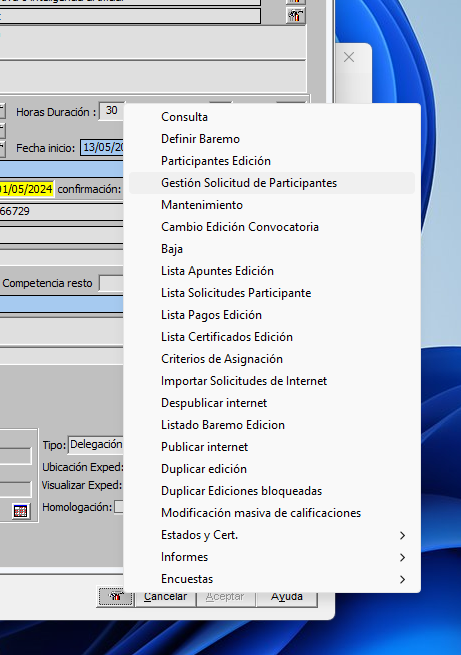
Treballarem en la pantalla que apareix en la que consten tots els inscrits.
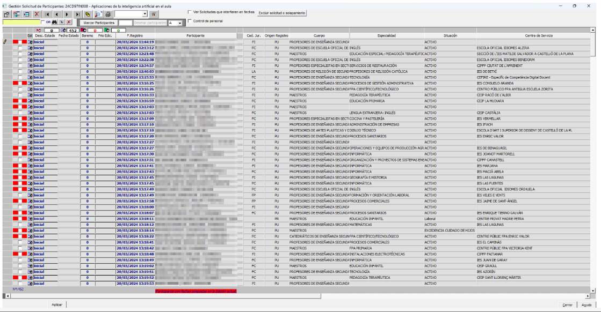
El primer que farem serà mirar si com a participant apareix alguna persona amb el nom del coordinador. Aquests seran participants que no han sigut trobats per Gesform i els inscriu amb el nom del coordinador.
Si fem doble clic al nom del coordinador s’obrirà una finestra amb les dades de la persona que hi ha al darrere d’aquesta inscripció.

Copiem el DNI de la persona que hi ha en l’apartat de Observaciones i l’enganxem a la casella del DNI de Persona (a la mateixa finestra), si no apareix és que no és docent o encara no està donat d’alta.
Caldrà posar-se en contacte amb la persona per tal de comprovar si és docent o no. Si és docent necessitem una prova com a que és docent (nòmina, certificat de secretaria, captura ovidoc, etc..). A més, és caldrà donar d'alta a la persona.
Escriurem un correu a compteformacio@gva.es amb totes les dades de la persona i el DNI per tal que ens donen d'alta a la persona segons el document PROTOCOL_INCORPORACIO_DOCENTS_GESFORM_rev270325.pdf [Descàrrega d'arxiu] i DADES_INCORPORACIO_DOCENTS_GESFORM_rev270325.pdf [Descàrrega d'arxiu] amb firma digital. Aquest últim document es pot sustituir pel de CODI_DADES_PONENTS_NOM.pdf sempre que tinga la firma digital.
Recordeu que tots aquells docents de la Comunitat Valenciana (ensenyament reglats no universitaris) tenen dret a fer formació i per tant a inscriure's a les formacions del CEFIRE.
Durant la formació hem de revisar que totes les dades dels participants són correctes. És molt important que el nom y cognom dels participants estiguen en majúscules. En cas d'haver algú participant en minúscules hem d'enviar un correu a compteformacio@gva.es. Les assessories no podem modificar cap informació de persones en Gesform.
Una vegada ja tenim a tots els participants amb la seua identitat. Anem a Extintor – Definir baremo
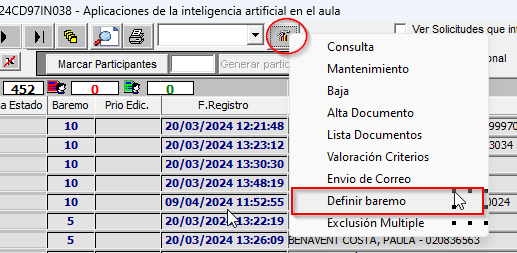
Si apareix una finestra per solapament donar Aceptar per no excloure ara i posteriorment ho mirarem.
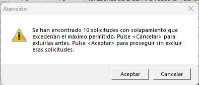
En la següent pantalla caldrà definir les característiques que donen puntuació per tal d’ordenar als participants. Si el curs té característiques que donen puntuació.
SITUACIÓN JURÍDICA (FC – Func carrera; FI - Interí; FP - Pràctiques; LA – Laborals; CA - Catedràtics) Per exemple si és administracions públiques podriem posar 5 als interins i 10 als funcionaris de qualsevol tipus.
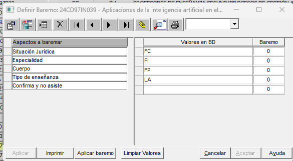
ESPECIALIDAD I CUERPO – Deixarem 0 si és internivell i si no determinar la puntuació a donar a cada especialitat o nivell.
TIPO DE ENSEÑANZA - PR – Privada i PU - Pública
CONFIRMA Y NO ASISTE – Si posa 0 és que no hi ha ningú dels inscrits que en altres formacions haguéren confirmat i no assistit i per tant penalitzariem, en aquest cas en el barém establirem una puntuació negativa. Per tal de penalitzar per aquesta situació.
Una vegada definit tot el barem Aplicar – Aceptar.
Refrescar la pàgina, segona Icona.
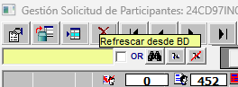
A continuació caldrà ordenar als participants segons el seu barem.
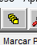
De la finestra que apareix caldrà desmarcar l’opció Desc. Estado per que no ho tinga en compte.
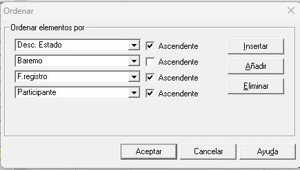
Quedant de la següent manera la finestra:
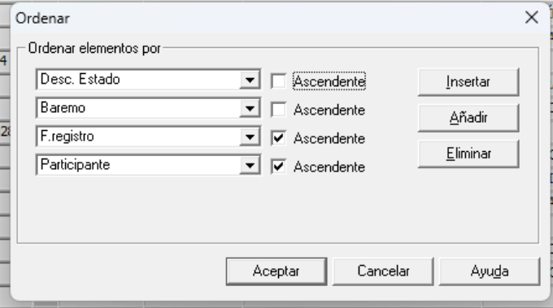
En la llista de gent a la part de la dreta en la segona columna, la gent que té un quadradet vermell significa que està actualment en altres formacions amb dates coincidents.
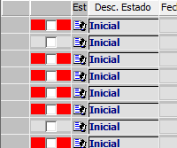
Caldrà excloure a aquells participants que tenen ja 3 formacions (màxim que es pot realitzar). Per fer aquesta acció hi ha l’opció Excluir solicitud x solapamiento, situada la part superior dreta.
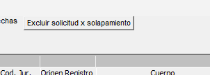
Aquests participants apareixeran al final amb estat Excluido
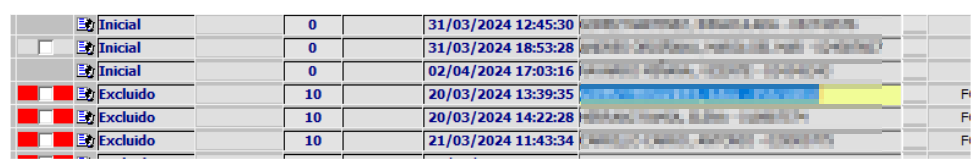
Per comprovar si això és correcte cal seleccionar a un participant exclòs i clicar a la part superior Ver Solicitudes que interfieren en fechas
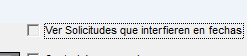
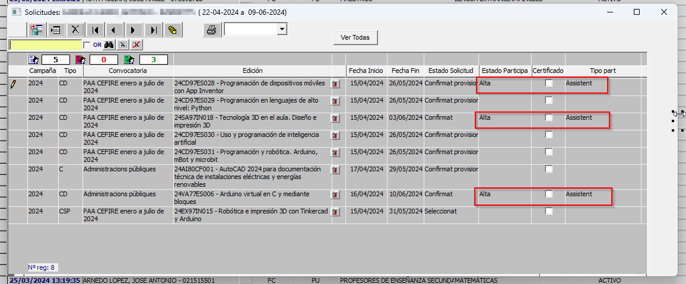
NOTA: Si apareix algun participant amb dues només pot ser que ja estiga admés a un altra però encara no actualitzat.
Una vegada revisat i ordenat amb relació al barem definit caldrà seleccionar tants participants com places hi ha al curs. En la finestra al costat dret de Marcar Participantes caldrà posar aquesta dada (places) i clicar a Marcar Participantes
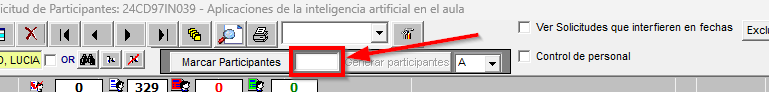
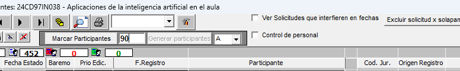
Apliquem (boton Aplicar de debajo y/o Refrescar). Ordenem de nou i veurem que ara els participants seleccionats estan en Estat Seleccionado i els de llista d’espera estaran en Estat Inicial
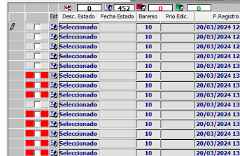
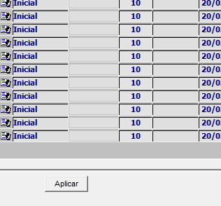
Per tenir el mail per poder informar de l’inici de la confirmació caldrà exportar un excel de participants.
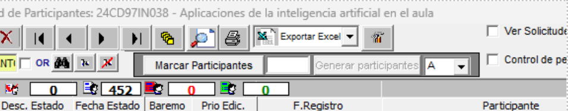
Per tal que el curs estiga ja en confirmació pels participants, caldrà passar a estat confirmació. Per fer aquesta acció anem a Extintor – Estados y Cert. - Passar a estado de confirmación
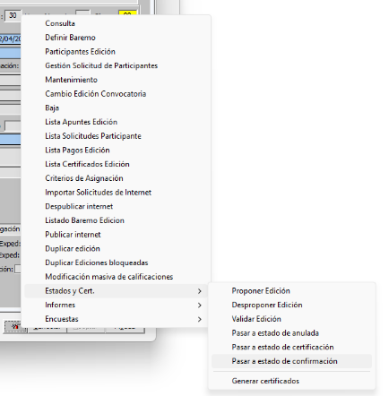
Finalment caldrà enviar un missatge a tots els inscrits informant que comença el període de confirmació.
Exemple de correu de confirmació (el dia de llistes provisionals)
Bon dia,
Ja està disponible la llista provisional de professorat admés al curs "YY" (enllaç &usuario=formacion).
Es tracta d'un curs en línia de 30h que tindrà lloc entre el DD de MM de 202A i el DD de MM de 202A.
Podeu consultar el llistat i confirmar o renunciar la vostra participació seleccionant l'enllaç que apareix al costat del vostre nom, a la dreta de la pàgina. Per favor, fins el dia D de MM, confirmeu o renuncieu en funció de les vostres preferències per a deixar places lliures si realment no esteu interessats o interessades.
Es publicarà el llistat definitiu a partir del dia D de MM.
PD: Si no us deixa confirmar o renunciar amb el vostre mail, és perquè possiblement, vas fer la inscripció des d'una tauleta o mòbil i la primera lletra del teu mail segurament estarà en majúscula (només la primera lletra).
Si voleu fer una consulta, envieu un correu a:
XX@edu.gva.es o YY@edu.gva.es
Salutacions
XX i YY
________________________
Buenos días,
Ya está disponible la lista provisional de profesorado admitido en el curso "YY" (enlace &usuario=formacion).
Se trata de un curso en línea de 30h que tendrá lugar entre el DD de MM de 202A y el DD de MM de 202A.
Podéis consultar el listado y confirmar o renunciar vuestra participación seleccionando el enlace que aparece junto a vuestro nombre, a la derecha de la página. Por favor, hasta el día D de MM, confirmáis o renunciáis en función de vuestras preferencias para dejar plazas libres si realmente no estáis interesados o interesadas.
Se publicará el listado definitivo a partir del día D de MM.
PD: Si no os deja confirmar o renunciar con vuestro mail, es porque posiblemente, hiciste la inscripción desde una tableta o móvil y la primera letra de tu mail seguramente estará en mayúscula (solo la primera letra).
Si queréis hacer una consulta, enviáis un correo a:
XX@edu.gva.es o YY@edu.gva.es
Saludos
XX y YY